Interval numerical methods compute bounds that contain mathematically correct results. These methods take into account round off and truncation errors, and can also include modelling errors. The bounds produced by an interval method can be used, for example, to prove a theorem, to ensure that critical calculations are reliable, or to verify the accuracy of a floating-point computation.
Symbolic and interval validated techniques are natural allies. Symbolic techniques attempt to compute exact answers. When exact answers are not available, a symbolic environment must resort to numerical techniques. It would seem that the guarantees of interval techniques are more philosophically satisfying than standard approximate techniques. Further, interval techniques tend to draw on the tools of symbolic computations more heavily than approximate techniques.
This session attempts to build bridges between symbolic and interval researchers. We provide a survey of interval techniques and present some recent developments in interval computing we think may be useful in the context of symbolic algorithms. We also present some interval research challenges for which symbolic techniques may provide answers.
Abstract: Interval methods produce bounds that are guaranteed to contain mathematically correct results. Such bounds enclose truncation, rounding, and often modeling errors. Simply replacing reals by intervals in a point numerical method usually leads to a ``naive'' interval method, which computes bounds that are generally too wide to be useful. To compute sufficiently tight bounds, an interval method normally involves specific ``interval'' machinery. This talk presents interval arithmetic and techniques commonly used in interval methods.
We discuss interval arithmetic and some of its properties. Bounding ranges of functions is central to interval computing. We illustrate popular approaches, such as the mean-value form, the slope form, and Taylor series, for bounding ranges of functions.
A contractive mapping theorem is frequently the basis of an efficient interval algorithm. We show how contractive mapping (and other approaches) are employed when enclosing the solution of a nonlinear system of equations, using an interval Newton method, and when enclosing the solution of a linear system of equations.
We also discuss briefly several popular interval-arithmetic packages.
Abstract: Csets (containment-sets) are a way of giving expressions a value even at arguments that give rise to division by zero or other ``illegal'' operation. The definition for evaluation over the reals is that, if
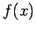
is a function of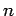
variables (so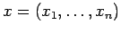
) then its cset at a point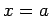
is the set of all limits, in the extended reals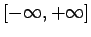
of sequences of values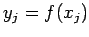
where the sequence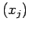
converges to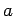
. Thus, regarding as the value of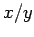
at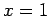
, and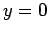
one has in the cset sense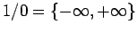
, similarly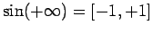
, and so on. This leads to an arithmetic system in which exceptions do not occur, but where point inputs can produce set outputs.There are subtle difficulties associated with this programme. How are set-valued constants to be interpreted? For instance, does it make sense to define a function by
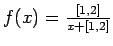
? When we see the expression , how do we know to interpret it as the function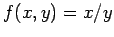
evaluated at , and ?The talk will address these and related issues.
Abstract: Introduction to MPFI. Interval arithmetic provides guaranteed results: it encloses every value or result in an interval, and it computes with these intervals. However, the resulting intervals may grow as the computations proceed. To obviate this swelling, contracting iterative methods are favoured. With such methods, the computing precision becomes a limiting factor. This observation led us to propose a library for arbitrary precision interval arithmetic, Multiple Precision Floating-point Interval (MPFI) arithmetic library, built upon Multiple Precision Floating-point Reliable arithmetic (MPFR, www.mpfr.org). MPFI is developed by N. Revol and F. Rouillier in C and can be freely downloaded from www.ens-lyon.fr/~nrevol/.
Applications. Some algorithms have been developed using MPFI. A first algorithm isolates the real roots of a polynomial using a multiple precision interval arithmetic in the Uspensky (or rather Vincent) algorithm to avoid time-consuming exact computations. A second one is the adaptation of the interval Newton algorithm to this arithmetic. The Interval Newton algorithm encloses the real roots of a function and may also determine the existence and uniqueness of these roots in the returned enclosing intervals. The proposed algorithm additionally allows to enclose the roots with arbitrary accuracy.
Linear systems. Solving a linear system with a matrix and a vector
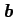
, both with interval components, amounts to determining an enclosure of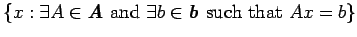
. Gauss-Seidel iteration, applied to the pre-processed system with a point matrix, is often used. This method is called the Hansen-Sengupta algorithm. When this iteration can be made contracting, it is a method of choice for interval arithmetic and also for arbitrary precision interval arithmetic. Another linear system comes from signal processing: determine the dynamics of an IIR filter. This problem can be written as an iteration similar to Gauss-Seidel. We will present some preliminary results on this problem.This type of iteration may be comparable with the technique of elimination of division as presented in Strassen, 1973, which is classical in symbolic computations.
Abstract: Interval arithmetic has been widely used in enclosure methods for almost 40 years. Today, it is a well established tool for the calculation of rigorous error bounds for many problems in numerical analysis.
However, interval arithmetic suffers from two drawbacks: the dependency problem and the so-called wrapping effect. Both can cause an overestimation of the solution set of a given problem, so that the computed error bounds may become over-pessimistic in practical calculations.
To reduce the overestimation of the true error, Taylor models have been developed by Berz and his group since the 1990s. A Taylor model of a function f on an interval X consists of the Taylor polynomial p of order n of f and an interval remainder term I, which encloses the approximation error f-p on X. In computations that involve f, the function is then replaced by p+I. The polynomial part is propagated by symbolic calculations, whereas the interval remainder term encloses all truncation and roundoff errors that appear in the computation. Thus, Taylor models can be regarded as a symbiosis of a computer algebra method and interval arithmetic.
Software implementations of Taylor models have been applied to a variety of problems, such as global optimization problems, validated multidimensional integration, or the solution of ODEs and DAEs.
Our talk will present an introduction to Taylor models and discuss some open problems.
Abstract: Given just a picture of a relation, what can we deduce about the relation? If the picture was produced by a typical equation graphing program then almost nothing can be deduced as such pictures contain, by themselves, very little useful information. This clearly could be improved upon. I begin by offering some simple semantics for pictures of relations. After discussing some of the limitations of these semantics, I will outline some algorithms. Much of this work is embodied in GrafEq, which is available from www.peda.com/grafeq.
Abstract: We show how a variety of interval algorithms found their use in an important area of applied physics, multibody systems' modeling, and in particular, in the multibody modeling program MOBILE. The talk acquaints the audience with the key features of this open source software (e.g. its object-oriented approach resulting in usage of state objects and transmission elements for modeling of arbitrary mechanical systems), outlines the main advantages of applying interval arithmetic concepts to it (e.g. an opportunity to implement new kinds of transmission elements), and concentrates on interval modeling of dynamics, which is an inherent part of almost all multibody simulations. In the latter case, the strategies to overcome difficulties with integration of an interval initial value problem solver into MOBILE are described and as a result, its interval extension enhanced with such a solver (based on VNODE) is presented. The functionality of the above ways of intervals' application is shown on some examples. We provide insight into techniques used to enhance already existing modeling software with interval arithmetic concepts.
Abstract: ALIAS is a C++ library of algorithms that deal with systems of equations and inequalities. Most of these algorithms are based on interval analysis, but some of them are related to constraint programming methods, and a few others perform symbolic computations. The scope of ALIAS includes algebraic expressions and also expressions involving intervals. The library provides tools for a wide range of problems including finding an approximation of the real roots of a 0-dimensional system, giving bounds of the roots of an univariate polynomial, and performing global optimization of a function with interval coefficients.
Abstract: The challenge of the title consisted of ten computing problems (available from www.siam.org/siamnews/01-02/challenge.pdf) posed by L. N. Trefethen, who offered a cash prize for the best solutions. The event attracted 94 teams from 25 countries. The problems were numerical in nature, but symbolic computing was able to play an important, and sometimes surprising, role in about half of them. Interval arithmetic provides both an algorithm and verification for the global optimization problem of problem 4; intervals are also useful for problem 2, as a way to control the exposure to excessive rounding error. For problem 9, computer integration plays a surprising role. Symbolic work yielded interesting results in several of the other problems too, such as 6, 7, and 10. The important moral is that symbolic computation and interval methods can be very important in work on problems that are ostensibly purely numerical.